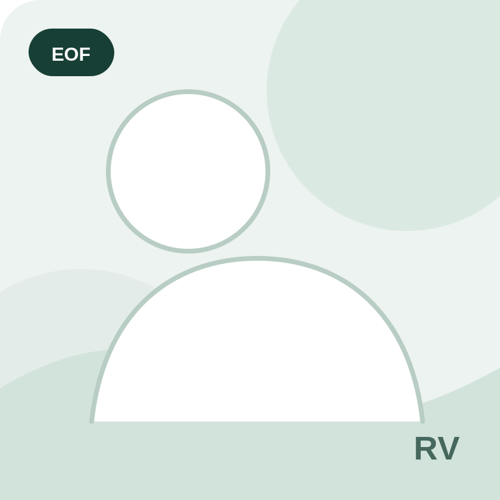
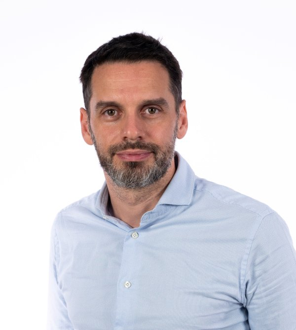

Chiara Bartolozzi
Italian Institute of Technology
TalkEvent-driven vision to unlock low-latency real-time applications
2nd edition · IJCNN 2025
Integrating Artificial Intelligence in Smart Eyewear (IAISE)
The 2025 edition broadened the series from computer vision toward artificial intelligence, connecting machine learning, eye tracking and deployable smart-eyewear systems.
July 4, 2025 · 10:00–18:00
A full-day program of invited talks, short paper presentations, a poster session and the workshop awards ceremony.
Invited talks
The final lineup combined eye tracking, low-power sensing, edge AI, egocentric vision and AI image sensors for wearable devices.
Italian Institute of Technology
TalkEvent-driven vision to unlock low-latency real-time applications
King's College London
TalkTowards Robust Eye Tracking for Everyday Smart Eyewear Use
KU Leuven
TalkToward Everyday Sensing and Modelling of Gaze Behavior

ETH Zurich
TalkOpenEdgeETH Glasses: A Fully Open, Ultra-Efficient On-Device AI Platform for Smart Eyewear

University of Modena and Reggio Emilia
TalkListen and watch what matters: research projects with smart glasses at AImageLab
Sapienza University of Rome
TalkDeploying AI vision models on edge devices: a case report
Meta
TalkAI Sensors for Wearables
Prophesee
TalkWhat are event-based cameras good for?
University of Catania
TalkEgocentric Vision as a Bridge for Human-AI Collaboration
Recognition
The workshop recognized three submissions based on novelty, impact and research quality during the closing session.
Workshop contributions
Seven accepted papers covering efficient embedded vision, adaptive smart eyewear, eye tracking, tensor quantization, eye segmentation, neuromorphic sensing and active learning.
Organizing committee
The edition was organized jointly by researchers from EssilorLuxottica and Politecnico di Milano.

EssilorLuxottica

Politecnico di Milano

EssilorLuxottica
EssilorLuxottica
Politecnico di Milano

Politecnico di Milano

EssilorLuxottica

EssilorLuxottica

Politecnico di Milano
Workshop gallery
Photographs from the second Eyes of the Future edition, held at IJCNN 2025 in Rome.
Workshop series
Move between the current workshop and the preserved archive pages without leaving the EOF site.
The first Eyes of the Future workshop, focused on computer vision for smart eyewear.
Explore archiveThe AI-focused edition at IJCNN 2025.
This archiveThe current edition on deployable vision and AI for smart eyewear.
Current edition